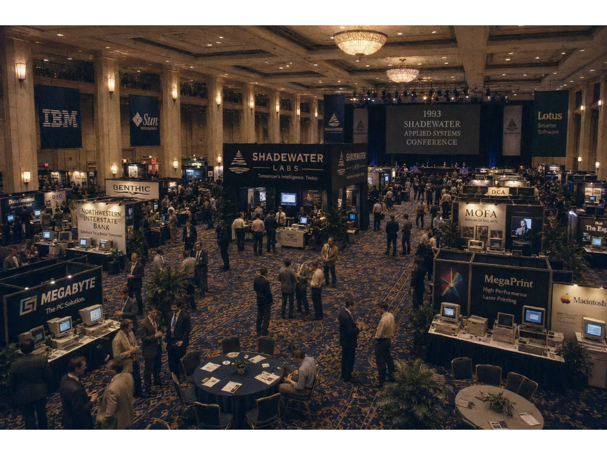
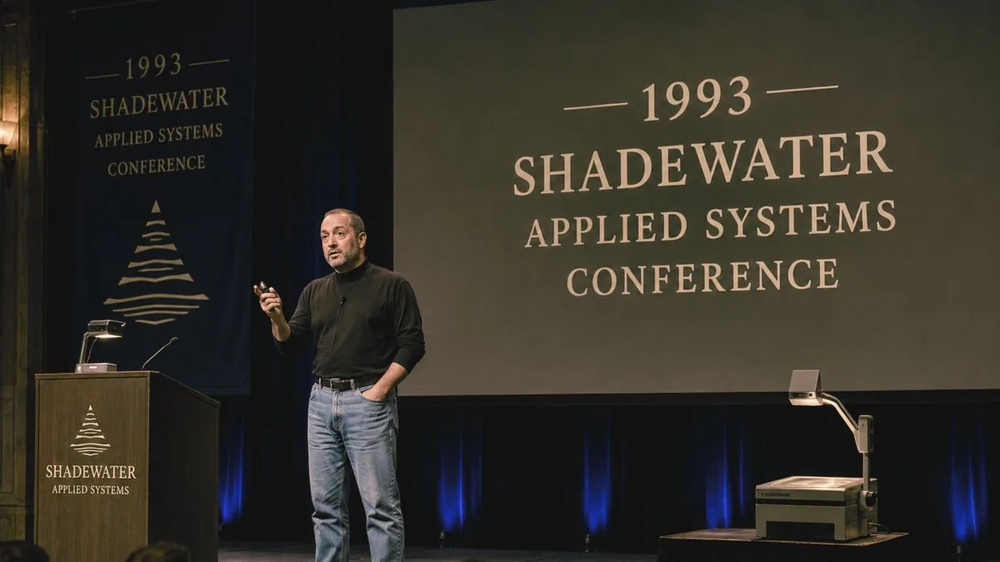
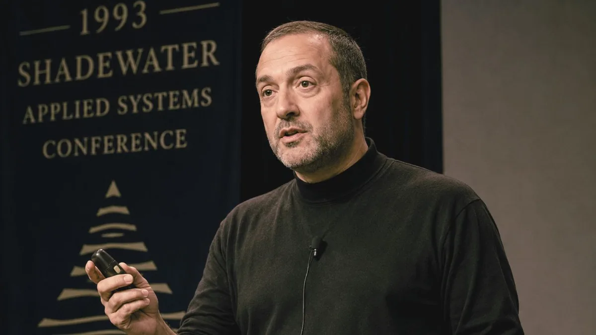
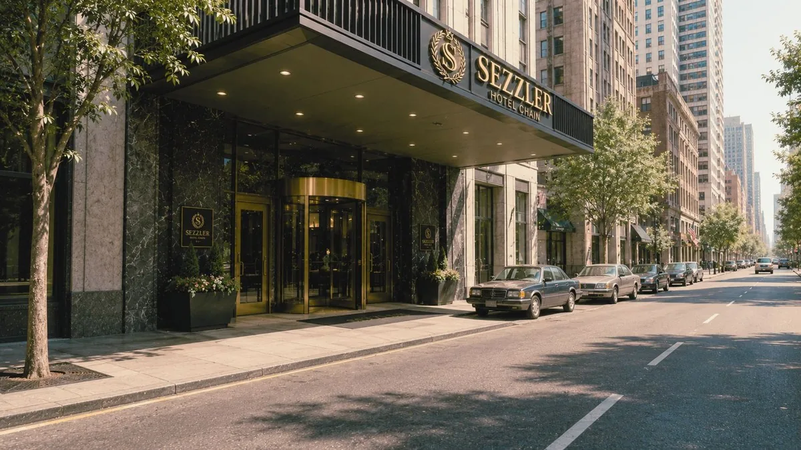
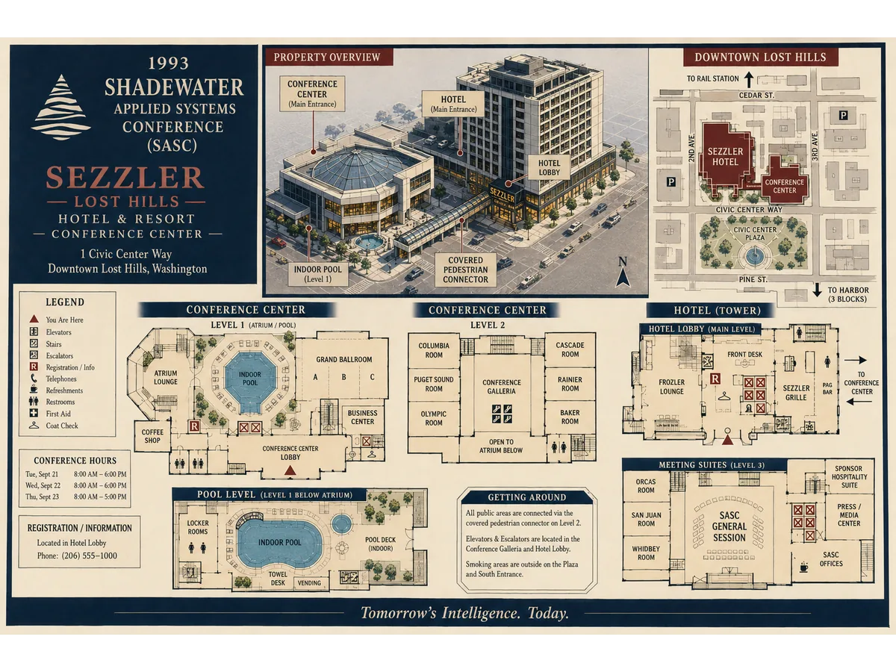
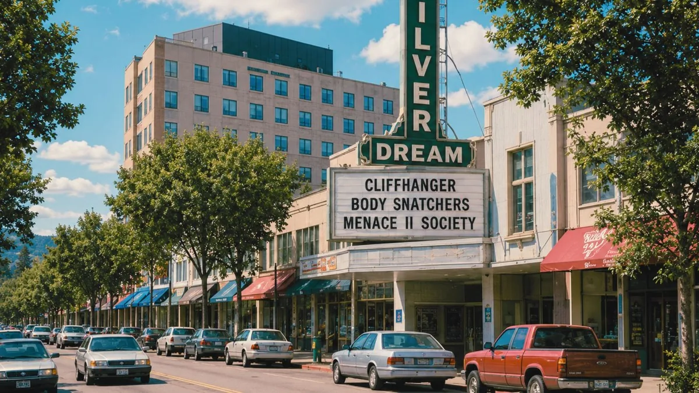

[#]Shadewater Applied Systems Conference
May 17–21, 1993 · Sezzler Lost Hills Conference Resort
Presented by Shadewater Laboratories, the City of Lost Hills,
Megabyte Computers,
Northwestern Interstate Bank, and the Lost Hills Chamber of Commerce.






At 03:17 PDT, May 22 — approximately 18 hours after the final day began — the CityNet archive unexpectedly entered emergency standby. All connected systems, including this one, were frozen in their current state. The cause remains undocumented.
About the Conference
The Shadewater Applied Systems Conference (SASC) is a five-day civic technology expo showcasing advanced systems for city infrastructure, spatial mapping, emergency response, healthcare, education, communications, banking, hospitality, and public records. The 1993 event is the first SASC open to the general public and the largest civic technology gathering in the Pacific Northwest this year.
Schedule of Sessions
| Date | Time | Session | Venue |
|---|---|---|---|
| Mon May 17 Opening Day |
09:00 | Welcome & Ribbon — Children's Care Wing Dedication | LHRMC, Wing C |
| 11:00 | Opening Keynote — "The Future Works Here" (Dr. H. Ewing, Shadewater) | Sezzler Main Hall | |
| 14:00 | CityNet Public Access Terminals — Live Demo | Sezzler Pavilion C | |
| 19:30 | Welcome Reception (delegates) | Sezzler Atrium | |
| Tue May 18 | 09:00 | Horizon Mapping System — Survey Walkthrough | Pavilion B12 |
| 11:00 | Continuity Grid (Power & Records Failover) | Main Hall | |
| 14:00 | Civic Response Engine — Live Drill, Lost Hills Fire | City Plaza Lot | |
| 16:30 | Emergency Communications Pilot — Q&A | Pavilion A | |
| Wed May 19 | 09:30 | Municipal Archive Digitization (Clerk panel) | Main Hall |
| 13:00 | Sezzler Smart Elevator Routing — Tour | Sezzler Towers 1–3 | |
| 15:00 | Catfish Lake Environmental Monitoring Array | Lake South Pier | |
| Thu May 20 | 10:00 | Signal Drift Recorder — Findings to Date | Pavilion B12 |
| 13:00 | Lattice Relay System — Open Discussion [reschedule pending] | TBD | |
| 16:00 | Corridor Imaging Prototype — Closed Demo (badge) | Pavilion B12 | |
| Fri May 21 Final Day |
09:00 | [entry pending verification — restored from B12] | — |
| ??:?? | Shadewater Final Demonstration — Main Hall | [record withdrawn] | |
| --:-- | Entry removed at the request of the Clerk's Office. | ||
| 03:17 | Closing Remarks (impossible timestamp; see clerk_removed_articles.html) | — | |
Featured Technologies
- Horizon Mapping System — long-range spatial modeling of the Cascade foothills
- Continuity Grid — power & records failover for civic infrastructure
- Civic Response Engine — integrated dispatch for fire, EMS, police
- CityNet Public Access Terminals — you are using one now
- Catfish Lake Environmental Monitoring Array — water & sediment telemetry
- Children's Care Wing Systems Tour — patient & records integration
- Sezzler Smart Elevator Routing — predictive vertical transport
- Emergency Communications Pilot — multi-band relay
- Municipal Archive Digitization — with the Lost Hills Clerk
- Signal Drift Recorder — applications under review
- Lattice Relay System — [abstract withdrawn]
- Corridor Imaging Prototype — [demo room B12; see notice]
Exhibitors
| Exhibitor | Booth | Focus |
|---|---|---|
| Shadewater Laboratories | Main Hall A1–A8 | Civic systems, imaging, applied research |
| Megabyte Computers | Main Hall B1–B4 | Public access terminals; networking |
| Northwestern Interstate Bank | Pavilion A | Civic finance, ATM modernization |
| Sezzler Hotel & Resort | Lobby + Pavilion C | Hospitality systems, smart elevators |
| Authentic Tech | Pavilion C | Audio-visual; consumer electronics |
| Benthic Gas & Food Mart | Outdoor lot | Catfish Lake permit issuance demo |
| Lost Hills Public Library | Pavilion A | Archive digitization showcase |
| Lost Hills Newspaper | Pavilion A | Press room, daily bulletins |
| [Restricted Exhibitor] | Pavilion B12 | By delegate badge only — listing withdrawn |
Venue & Map


Getting There
Sezzler Lost Hills Conference Resort is located at 1 Civic Center Way, downtown Lost Hills. Free shuttle from North Plaza and the Lost Hills rail platform every 20 minutes. CityNet terminals available in the lobby courtesy of Megabyte Computers.
Press
Daily press briefings 08:30 in Pavilion A. Inquiries to the Lost Hills Newspaper press room or the Clerk's Office.
Speaker Directory (partial)
| Name | Affiliation | Session |
|---|---|---|
| Dr. H. Ewing | Shadewater Labs (Director, Applied Systems) | Opening Keynote |
| M. R. Cordell | Mayor, City of Lost Hills | Welcome |
| L. Tashiro | Megabyte Computers | CityNet Demo |
| Dr. J. Inman | Lost Hills Regional Medical Center | Care Wing Tour |
| K. Vorster | Northwestern Interstate Bank | Civic Finance |
| R. Olesen | Lost Hills Public Works | Continuity Grid panel |
| Dr. A. Mayer | Shadewater Labs (Signal Research) | Signal Drift / withdrawn |
| [name redacted by request] | Shadewater Labs (B12 Program) | Corridor Imaging Prototype |
| Additional entries removed at the request of the Clerk's Office. | ||
Speaker Notes & Bios (from delegate packet)
Partial — packet rebuilt from B12; some bios are missing or truncated. Pagination differs from printed copy.
Dr. Ewing has led Shadewater's Applied Systems division since 1981 and serves as principal investigator on the Continuity Grid and Civic Response Engine. He holds degrees in electrical engineering and systems theory. Opening Keynote: "The Future Works Here."
Note: speaker listed in printed packet as Dr. H. Ewing. Photo metadata in archive reads DR_A_MAYER_SIGNAL_RESEARCH. EACS has amended the metadata field. Original value not recoverable.
Mayor Cordell has served Lost Hills for nine years and is the chief civic sponsor of CityNet and the SASC partnership. She welcomes delegates on behalf of the city's 18,420 residents. Welcome remarks, Children's Care Wing Dedication.
Dr. Inman oversaw the design and construction of the new Children's Care Wing and the integration of Shadewater's patient records system. He also contributed a photographic work to MOFA's "The Shape of Distance" exhibit. Care Wing tour and records integration panel.
Mr. Tashiro leads Megabyte's CityNet public access terminal program. He joined Megabyte after six years at Pacific Coast Telephone's network infrastructure group. CityNet Live Demo, Pavilion C.
Mr. Olesen's department has managed the Continuity Grid installation since 1985 and will oversee the full activation scheduled for Friday May 21. [bio truncated in packet rebuild] Continuity Grid panel, Main Hall.
[bio removed from archive at Shadewater request — restored from B12 — content withheld]
Signal Drift Recorder session, Pavilion B12. Closed session; delegate badge required. [entry pending]
[bio not in packet — delegate badge required — see Pavilion B12 access notice]
Corridor Imaging Prototype demonstration. Public attendance was originally permitted. [registration closed]
From the Delegate Packet — Friday Final Demonstration
Appendix C — SASC 1993 Final-Final Packet (rebuilt from B12; pagination differs)
The closing demonstration of the Shadewater Applied Systems Conference will combine the Horizon Mapping System, the Lattice Relay System, and the Corridor Imaging Prototype in a single integrated presentation. The demonstration will take place in the Sezzler Main Hall beginning at 09:00 and is open to all conference delegates and registered members of the public.
[remainder of appendix not in B12 rebuild — print copy not available]
Note: A one-page appendix titled "Recovery Procedure" appears in this packet and does not appear in the printed delegate copy. The Clerk's Office has not authorized its contents. Contents not reproduced here.
Conference Packet (download)
[ sasc_1993_conference_pamphlet.pdf ] — public conference program & exhibitor guide · distributed at the door
[ sasc_1993_packet_B12restore.zip ] — delegate packet rebuild from B12 · file size mismatch; download may be incomplete